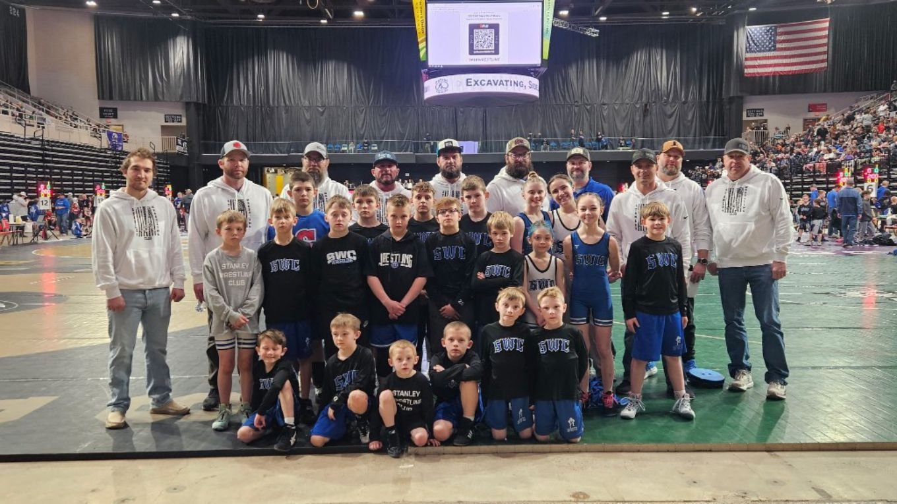

Stanley, North Dakota · Youth wrestling
Parent Handbook
Stanley Wrestling Club · 2026–27 season

Welcome to SWC
We're glad your family is part of the Stanley Wrestling Club. SWC is a non-profit youth wrestling program for wrestlers age 5 through 12th grade in the Stanley area. Our goal is simple: teach the sport, build confident kids, and have fun doing it.
All are welcome. Boys and girls wrestle with us, and new wrestlers are always welcome.
This handbook explains how the club works, especially for new families. Keep it handy during the season. The club board may update it at any time; the newest version is always on our website.
What's inside
- Who to contact, coaches and board
- Seasons, groups and practice times
- Registration, fees and paying
- Uniforms and gear
- Tournaments and duals
- Health, hygiene and safety
- Questions or concerns
- Codes of conduct for parents and wrestlers
1. Who to contact
Heja is our main way to talk. Team messages, schedule changes and tournament sign-ups all go out on Heja. Join with team code GR986946. Coach John answers here first.
| Heja | Team code GR986946 (messages, changes, tournament sign-ups) |
| Facebook | facebook.com/stanleywrestlingclub (club news, photos, announcements) |
| Website | stanleywrestlingclub.org (schedule, calendar, tournaments, forms) |
| Email | stanleywrestlingclub@gmail.com |
| Mail | Stanley Wrestling Club, PO Box 268, Stanley, ND 58784 |
Coaches
John Batteiger – Head coachJake CarpenterMatt RulandDusty FladelandChandler MeiersRocky FladelandJay Sorenson
Every SWC coach completes the mandatory USA Wrestling background screening.
Club board
Lionie Fladeland · Danielle Fladeland · Jake Carpenter
Stanley Wrestling Club · Parent Handbook 2026–272
2. Seasons and practice
All practices are at 104 S Main St, Stanley, ND 58784.
| Group | Who | Season |
|---|
| Preseason | 2nd–6th grade, starting 3rd year of wrestling or more | Nov 9 – Dec 31 (no fee) |
| Advanced (boys & girls) | 2nd–6th grade, starting 3rd year of wrestling or more | Jan 5 – Mar 31 |
| Beginners | Age 5 to 6th grade, starting 1st or 2nd year of wrestling | Feb 9 – Mar 31 |
Practice times
| Group | Days | Time |
|---|
| Preseason · Nov 9 – Dec 31 |
| Preseason group | Mon, Tue, Thu | 4:00–5:15 PM |
| January · Jan 5 – Feb 8 |
| Advanced girls | Mon, Tue, Thu | 4:00–5:15 PM |
| Advanced boys | Mon, Tue, Thu | 5:15–6:30 PM |
| February & March · Feb 9 – Mar 31 |
| Beginners | Tue, Thu | 4:00–4:45 PM |
| Advanced girls | Mon
Tue, Thu | 4:00–5:15 PM
4:45–6:00 PM |
| Advanced boys | Mon
Tue, Thu | 5:15–6:30 PM
6:00–7:15 PM |
No practice Thu, Jan 7 (varsity dual night). Practice days and times are subject to change based on participation and the needs of the club. Changes are posted on Heja. The full calendar is on our website.
Practice is drop-off only. Parents may not stay and watch. This helps wrestlers focus on their coaches. Drop your wrestler off 5 minutes before their practice starts and pick them up on time when it ends. Keep your phone on in case we need to reach you.
Stanley Wrestling Club · Parent Handbook 2026–273
3. Registration and fees
Register once for the season on the registration form (on our website). One form covers the whole family, up to 4 wrestlers, plus the waiver, volunteering, uniform sizes and payment. It takes about 10 minutes.
Before you register: wrestlers age 5 to 6th grade need a current USA Wrestling membership (usawmembership.com). Have each wrestler's weight and an emergency contact handy.
| What | Cost |
|---|
| Preseason (Nov–Dec) | No fee |
| Uniform set (singlet, shirt, shorts) | $50 per wrestler, one time. Not needed for 6th graders who wrestled with the high school. |
| January | $50 per advanced wrestler (beginners start in February) |
| February and March | $100 a month for the first wrestler, $75 for each additional wrestler |
| 7th–12th grade wrestlers | No fees |
| Can't volunteer? | $300 family fee instead |
| Tournaments | Each tournament has its own entry fee (see section 5) |
How to pay
- At registration: pay by card at the end of the form. You can pay for all the months now or only some. The form adds up your total.
- Dues you still owe later: use the Pay dues form on our website. Example: you paid January when you registered; come back to pay February and March. Paying for more than one wrestler? Pay for them together to get the $75 price.
- Spell your wrestler's name the same way every time so payments match up.
- After paying, take a screenshot of the confirmation screen. It is your receipt.
Fee assistance
If your family needs help with fees, check the fee assistance box on the registration form. The club will reach out to you. Your wrestler can start practice once the request is approved and you have talked with SWC.
Volunteering
Our club runs on parent help. Every family volunteers at tournaments and club events, and we will reach out with easy ways to pitch in. If volunteering truly isn't possible, there is a $300 family fee instead.
Stanley Wrestling Club · Parent Handbook 2026–274
4. Uniforms and gear
- You pick uniform sizes on the registration form. Singlets are from Takedown Sportswear; boys and girls singlets are cut differently and sizes go by weight.
- Uniforms are handed out on a gear hand-out day. We announce the date on Facebook and Heja. Please don't ask for gear at practice; it won't be there until then.
- Wrong size? Swap it for the right size on gear hand-out day.
- Wear the team singlet at tournaments so coaches can find your wrestler.
- Outgrown shoes, headgear or singlets? Post them on Heja so another family can use them.
What to bring to practice
- Water bottle
- Athletic shorts and a t-shirt (no zippers or buttons)
- Wrestling shoes, if you have them
- No jewelry
A typical practice
- Warm-up
- Technique
- Drilling
- Live wrestling
- Short cool-down
Coaches adjust the pace for each age group.
5. Tournaments and duals
Practice comes first. Tournaments are a chance to test what wrestlers have learned. They are not required, and no wrestler needs to attend every one.
- Beginners and second-year wrestlers: the local, non-USA Wrestling tournaments, usually on Fridays. Good matches with less pressure.
- Advanced wrestlers: more USA Wrestling tournaments, plus bigger events like the NDUSA Team North Dakota Qualifier and Black Hills Nationals. Not sure? Ask a coach.
How to enter a tournament
- Pay first on the tournament payment form (on our website). Each tournament has its own price and a pay-by date.
- Then sign up on Heja and mark your wrestler as going.
- The club registers everyone who paid by the deadline. After the pay-by date, the tournament comes off our form and you register your wrestler yourself through the tournament.
Duals
The club enters dual teams (like Rattlers, Brodie Gorder, NWC and State Duals). Coaches pick the dual teams, and the club pays for duals.
Stanley Wrestling Club · Parent Handbook 2026–275
Tournament day
Bring
- USA Wrestling card (or the card the tournament requires)
- Team singlet
- Wrestling shoes
- Headgear, if your wrestler has it (optional for youth)
- Water, snacks and something to do. Days can be long.
The night before
- Shower
- Trim fingernails short
- If the tournament has its own weigh-in, check the time and place on the flyer
- Eat a good meal
Weigh-ins
Most tournaments don't have their own weigh-in. Coaches weigh wrestlers at practice before the tournament and enter their weights. The exceptions are tournaments with a set weigh-in time and place, like Rumble on the Red, the NDUSA Team ND Qualifier, NDUSA State and Black Hills Nationals. For those, the weigh-in time and place are on the flyer and on Heja, and you bring your wrestler to it. Officials there may also check skin and fingernails.
Brackets and results
We follow our wrestlers on TrackWrestling. Starting this year it sends you to FloWrestling, where you find each tournament's brackets, mat numbers and results.
How the day works
- Brackets. Wrestlers are grouped by age, weight and experience. Some groups wrestle everyone (round robin); bigger ones use a bracket. Look up your wrestler's bracket and mat number on FloWrestling.
- Warm up with the team before matches start.
- Listen for your wrestler's group or bout number and get to the right mat. A coach will be there too.
- Eat light between matches. Avoid greasy food right before wrestling.
- Don't leave early. Check with the table before going home to be sure your wrestler is done or hasn't placed for an award.
- Shower as soon as you can after the tournament.
First tournament? Coaches will walk new families through it.
Stanley Wrestling Club · Parent Handbook 2026–276
6. Health, hygiene and safety
- List allergies, medical conditions and medications on the registration form. Tell a coach at drop-off about anything new.
- Shower right after every practice and tournament and wash practice clothes every time. This helps stop skin infections.
- Keep your wrestler home and see a doctor if they have a rash, open sore or anything that looks like a skin infection. Let a coach know.
- Keep fingernails short. No jewelry on the mat.
- Photos and video may be taken at club events and shared on our Facebook page and in local newspapers (see the waiver on the registration form).
7. Questions or concerns
Most questions are answered fastest by messaging Coach John on Heja. If something doesn't feel right, talk to a coach privately, away from the wrestlers. It helps to wait a day and think it over first. You can also email stanleywrestlingclub@gmail.com.
What is winning?
Winning is improving, learning and trying. It's the first time your wrestler hits a new move in a match, finishes strong, or does better than ever before. Winning is working hard, listening to coaches and never giving in to being tired. Winning can happen to everybody.
Stanley Wrestling Club · Parent Handbook 2026–277
8. Codes of conduct
Parents
- Cheer for every wrestler, not just your own.
- Let coaches do the coaching.
- Drop off and pick up on time. Practice is drop-off only.
- Respect officials, opponents and hosts, home and away.
- Pay fees on time and turn in forms promptly.
- Keep up with Heja for practice and tournament news.
- Be encouraging, not critical. Your child wrestles for their own enjoyment.
- Bring any concern to a coach privately, away from the wrestlers.
- Pitch in when the club asks for help.
Wrestlers
- Have fun and give your best effort.
- Be on time with your gear.
- Listen when coaches are talking.
- Respect coaches, referees, parents and other wrestlers.
- Shake hands with your opponent and the referee.
- Win and lose with good sportsmanship. Control your temper.
- No horseplay or dangerous moves. That's how people get hurt.
- No bullying, hazing or bad language.
- Take care of the mats and gear, home and away.
See you on the mat!
Stanley Wrestling Club · Parent Handbook 2026–278